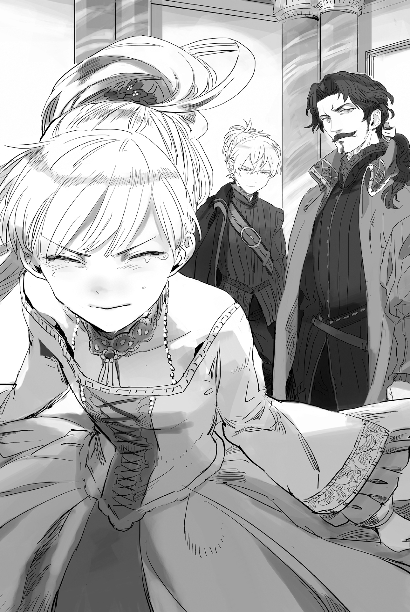

Chapter 3 – Those Who Lurk
.
Part 1
「Stop over there!」
A soldier of Antrim stopped a portly merchant who was riding a horse carriage and approached.
「──Thank you for your hard work. Here is my draft.」
「Uh huh.」
The soldier took the draft from the merchant with a business-like attitude and checked the draft’s seal and handwriting.
The three major roads that connected Antrim territory with Haurelia Kingdom had a checkpoint on each road. Recently, the number of people visiting these checkpoints was continuing to increase without any sign of stopping.
Because of that, the soldiers who were in charge of controlling the coming and going of the roads were swamped with work even after their number had been increased.
「This is certainly a draft from Count Savoie. What is your load?」
「Yes. I’m planning on selling cotton wool in Antrim and exchanging it with string.」
「There is a lot of string trading recently……」
「The string produced in Antrim is relatively cheap in proportion to its quality, after all……」
「So it’s like that.」
The soldier didn’t seem to know at all that there was a workshop of the new type spinner in Antrim. He only nodded without looking interested.
The merchant kept smiling, but inside he couldn’t hide his disappointment.
(Good grief, he isn’t even looking interested──this is why country bumpkins are just hopeless!)
The true identity of this man who disguised himself as a merchant was Sobat, the head of intelligence for Count Savoie.
His subordinates were only sending him uncertain pieces of information from rumors. In addition, some of his people were even starting to get discovered, so in the end he had no other choice but to infiltrate Antrim personally.
(However, I don’t think that my men can be caught with security of this level……)
Seeing how unwary the soldier just now, it was hard to believe that a spy would be caught as long as they didn’t commit a great blunder.
Even so, before this the checkpoints here would only be something like a place to send soldiers as punishment. It was already surprising enough that a proper soldier with the drive to do his job was stationed here.
「I heard that the new lord count is a person who is really capable.」
Sobat made a careful smile and made a small talk with the soldier. The soldier’s expression turned happy for a moment, but he seemed to catch himself and recomposed himself.
「Don’t make any unnecessary talk about some rumors.」
「How thoughtless of me, please be lenient on me.」
Sobat courteously bowed, but he wanted to click his tongue inside his heart.
The soldier’s reaction told him two things.
First, the soldier looked happy when Sobat praised the new lord as though it was he himself who was praised. That meant the count of Antrim had won over the heart of the population.
This was something unusual for a feudal lord who hadn’t even taken his post for a year.
No matter how unmotivated and incompetent the previous magister was, ordinarily it would take four or five years for the population to become attached to their new lord.
Edo shogunate also forcefully relocated all the influential daimyos with the objective of making it so that those daimyos couldn’t wage a substantial war until they managed to seize the heart of their subjects.
If those daimyos failed to seize the heart of the population and caused an uprising, the national power would decay and in the end their territory would be confiscated by the shogunate and their clan crushed.
It was abnormal for Baldr to already succeed in obtaining firm support all the way down to even a lowly soldier.
Second, at the minimum people in governmental work like soldiers and government officials had been formally forbidden to make idle talk.
Actually, even this soldier wanted to boast about the blessings that Baldr had brought to Antrim.
From how the soldier looked like he had to forcibly stop himself from talking, it was clear that there was some kind of will from above that was holding him back.
This could be said as an extremely troubling situation for someone who was trying to gather information here.
For a spy at Sobat’s level, it was possible to analyze several pieces of information that he obtained from small talk to reach a conclusion to some degree, but even that was impossible to do if he couldn’t obtain any information.
「──You can pass. A warning before that, if you enter a place that is forbidden to enter, you won’t be able to avoid punishment even with a draft from Count Savoie.」
「Thank you for the warning.」
(Looks like this mission will be far harder than I thought.)
Sobat was convinced that Antrim wasn’t a burden for the Mauricia Kingdom like in the past anymore. This territory was changing into a formidable enemy that Haurelia Kingdom couldn’t underestimate.
.
Part 2
「Shit! Why was I found out that quickly? There should be a limit no matter how much they strengthened their eyes……」
A man was pushing his way through a trackless path while running with gasping breaths.
Two of his comrades who accompanied him had already become silent corpses. He lost sight of one other and he didn’t know what had happened to him. Most likely, he was also continuing to run away like him for dear life.
It was safe to enter Antrim by using a draft like Sobat, but their actions would be limited that way. They could also only bring weapons in a limited fashion because of the need to hide it.
The spies from Haurelia also considered extortion and kidnapping to some degree, so they attempted to infiltrate Antrim illegally through the border, but──
.
「Zirco, go over there. Around twenty meters more.」
A lovely voice reached Zirco’s ear like a whisper.
This was an application of wind magic. The mercenaries that Zirco was leading worked together with each other and continued to pursue their targets accurately like in a hunt.
「Heh! So he is coming to my spot of all people, what an unlucky guy!」
Although she said that, Zirco was pulling out her great sword happily.
Even someone like her who turned slovenly when facing the temptation of food would become a first-rate warrior who bared her predator instinct when standing on the battlefield like this.
Zirco filled the tip of her feet with strength, like a beast that was gnawing into the ground.
She couldn’t be compared to a monster like Maggot, but Zirco’s body strengthening also wasn’t something that could be underestimated. The origin of her nickname as Zirco the Gale was her mighty blow that made full use of her charging power. She was famous for this among the mercenaries.
Zirco’s huge body was slowly leaning forward.
At the same time, her feet that were stepping firmly on the ground also sank a few centimeters into the soil. The pebbles that were coincidentally under her foot were shot off with a dry sound.
「Ten more meters.」
The wind magic that notified her of the situation became the signal. Zirco’s body accelerated explosively like a fighter jet that was fired from a catapult.
「GET OUTTA MY WAAAAAAAAAAYY!」
Zirco rushed through the distance of ten meters in the blink of an eye. Anything that got in her way, whether it was a tree or a rock would be torn apart if they got hit by her attack.
It was too bad for the man who got hit by a slash that came from far outside a sword range. He wasn’t even allowed to perceive Zirco coming at him.
「Eh……w-what is……?」
The man was only able to speak until there.
His entrails burst out from his torn apart stomach due to the pressure on his abdomen. At the same time, the man instantly lost consciousness due to the rapid decline of his blood pressure.
It was a heroic attack from Zirco that took down everything in its way. It didn’t even allow the target to realize that he had been killed.
Unlike Maggot, Zirco needed to charge her strength and couldn’t use it in succession. But that might and speed were enough to call the attack as godly fast.
「What? You kill them again huh, Zirco.」
A petite silhouette came down from above with a sarcastic voice. It was the mercenary Cell.
「Too bad, I’m not good with holding back.」
「Aa~aa, the guy got completely split into two like this……」
Cell himself had splendidly caught another spy alive.
Cell used a knife that was smeared with paralyzing poison. He was a type that displayed his strength fully in this kind of unconventional warfare.
「I knew you were going to catch one anyway, so it should be alright for me to do whatever I please.」
「Yuck, this is why you will never be able to become a wife.」
「That’s not your damn business!」
As expected, Zirco who had reached the age where she could be called an old maid replied angrily when Cell pointed out that.
She wouldn’t be worrying if it was that easy to find a man who would receive a savage mercenary like her as a wife. Besides, Zirco didn’t have the slightest intention to discard her current self just for the sake of a man.
.
「Cleanup finished. Let’s go back, Zirco.」
The battlefield control magician Marine(マリン) announced the end of their mission.
「Sure thing. You were a big help just now, Marine.」
「I was only doing as I was told. You should thank Baldr-sama instead for thinking up something like this.」
Marine let out a deep sigh seeing how the battle went without a hitch like usual.
She commanded the battle by using wind magic to send messages and used an application of water magic to detect heat sources. By combining these two things, it gave an overwhelming advantage to Zirco and others in unconventional warfare.
No matter how hard the spies tried to hide themselves, it was impossible for them to eliminate the influence of their body temperature on the air around them.
If that was detected using magic, it would be possible to have an advantage even when battling on a mountain or in a forest, where there was a lot of cover.
The battle system that Baldr thought up was displaying an immense effect like this. It had already consigned countless spies into oblivion.
「I wonder if our work will decrease a little now?」
Cell answered Zirco’s muttering.
「If it’s you, will you be able to ignore a mysterious area that continue to absorb the life of spies?」
「Fuu……looks like it will be a bit longer till we can have a day off……」
Zirco hung her head down while recalling the numerous delicious foods that she tasted at Baldr’s side, pressing her hand on her stomach that had slimmed down slightly.
The price of the spies’ lives were cheap as it was.
Zirco’s ordeals would continue for a while more until there were new mercenaries to reinforce them.
.
Part 3
Sobat advanced through a main road of Antrim. He put on a relaxed expression while observing his surroundings vigilantly.
What surprised him the most was how many soldiers there were.
Savoie House only had around 800 soldiers at best in times of peace. When it was a time of war, around 2000 people could be pressed into military service. This number was considered quite numerous, no noble would have the leeway to just leave those soldiers to stay idle daily.
Considering how tight the security at the border was and how their spies kept getting captured, most likely Antrim possessed a military force that rivaled or perhaps even surpassed Savoie House.
「……Impossible.」
The livelihood of the population that he saw from the street didn’t look that different from the population of Savoie territory.
Antrim territory’s size didn’t even reach half of Savoie territory. Normally it should be impossible for such a territory to maintain this many soldiers.
(Don’t tell me……Mauricia’s king is seriously starting to prepare for war?)
If it was impossible for the economic strength of Antrim, that meant there was someone else who was lending money for this.
The most likely person who did that in Sobat’s opinion was King Welkin who appointed Baldr to be Count Antrim.
In that case, this mission that fell on the shoulders’ of Sobat was important. If Antrim was being fortified for preparation prior to an invasion of Haurelia, Savoie House would be exposed to danger.
Sobat didn’t let the uneasiness inside his heart to appear at the surface and kept acting like a sociable merchant. He stayed in an inn at the city of Kosse that was located at the center of Antrim.
The main road stretched to the east and west from there. It would take two days to reach Gawain castle and the city around it at the east.
「Welcome.」
The expression of the inn owner was bright when welcoming a customer.
The inside of the inn was also kept clean. Seeing how there was a refined antique decorating the inside, it seemed the business was doing quite well.
「I’ll stay for a night. Please give my horse water and fodder. Looks like the business is going really well here.」
「Yes. Since the new lord came, the number of people coming and going has doubled. Thanks to that, business is booming.」
Sobat chuckled inside his heart.
As expected, unlike the soldiers, it seemed it was impossible for even the count to close the populace’s mouth.
「I was also surprised after coming here. This is my first time coming to Antrim for business, what kinds of people are coming here?」
Sobat had also learned that recently, the number of good quality string produced from Antrim was increasing.
However, the number of people coming and going wouldn’t double just from that. There should be another big reason.
「There are a lot of rowdy mercenaries and wanderers searching for work coming here. After all, this place is originally an abundant land, as long as war doesn’t break out. When my father was young, the rock salt of Antrim was a famous high-class commodity.」
Actually, other than rock salt, Antrim was also blessed with abundant mineral resources like iron.
Because of that too, this Antrim was a land that would be contested by the two countries right from the start.
「The new lord brought a lot of soldiers from his family territory and the capital, and thanks to that the safety of the highway is improved greatly and everyone can do their business without worry.」
So that was how. The lord seized the population’s heart by improving public order and cultivating industry at the same time──the viscount Antrim really understood the subtleties of economy despite his youth.
「No wonder I kept passing soldiers along the way. However, it must be difficult to maintain that many soldiers.」
At the very least there was no doubt that such a thing would be too much for the finances of a normal viscount.
「Perhaps……it seems the lord is really generous with money that even the mercenaries have never really done anything outrageous. From the rumors I heard, it seems the lord received a loan from the royal family.」
「Is the lord count a favored retainer of the king?」
「Who knows……I was told that the lord is the childhood friend of Teresa-sama who is the fiancée of Sanjuan Kingdom’s crown prince, and it was also he who settled the marriage talk deal.」
Sobat also knew about that rumor.
It was certainly a fact that the viscount was once dispatched to Sanjuan as an ambassador. Most likely, the rumor about how he was the one settling the marriage deal was also true.
That accomplishment seemed to be enough to promote to be viscount.
「I see……looks like Antrim’s future is bright.」
「This land had only kept declining since the war but……truly, I have nothing but thanks to our lord.」
Sobat enjoyed an idle talk with the inn owner for a while before he went to his room and sat down on a thoroughly cleaned bed. He let out a deep sigh.
The situation might be even more serious than he thought.
The development of Antrim and the expansion of the military power here weren’t the work of Viscount Antrim but the policy of the king who was behind him. The possibility of that was high.
His lord Count Savoie didn’t want a new war to break out, but if Antrim’s strengthening was the Mauricia king’s plan, it would be necessary to start the war while the preparations here still hadn’t finished.
「This is……I should resolve myself.」
Sobat knew very well how dangerous it would be to spy at the center of Antrim while the security was this strict.
However, the pressing situation that Sobat hypothesized was far more important than his life.
He had no intention to undervalue his own life, but he knew firsthand how just a single piece of information could possibly affect the lives of tens of thousands of people. There was no reason for him to hold his life dear.
.
Part 4
「S-say, perhaps we should just stop this? As I thought, this is just strange!」
「Agatha, can you return to your usual self soon?」
Baldr had lost count how many times Agatha had spoken about returning back to Antrim with this.
Agatha hadn’t returned to her usual confident and sadistic self at all since several days ago. Baldr scratched his forehead in bewilderment seeing her like this. It wasn’t because he wanted to torment Agatha, not at all (he insisted).
「Because! It’s impossible for someone worthless like me to be adopted into Randolph House! What if I’m treated like an impudent woman……」
──It would be better to be called Onee-san by Baldr.
「Please calm down Agatha. You must have known that there is a discord between the nobles at the central and the nobles at the remote region. Cornelius House is, in the end, just our last resort.」
「But……」
Randolph House was far different from the average noble.
The seats of the ten great nobles were mostly occupied by duke, a rank higher than marquis. But Marquis Randolph’s influence was in the top three among such nobles. He was counted as one of the strongest nobles in the kingdom.
Though of course it was greatly influenced by the special circumstance of how Silk was the one in possession of the right to inherit the throne of the overthrown Trystovy Kingdom, and how Trystovy nobles who became political refugees in Mauricia Kingdom were behind Marquis Randolph.
By any means, it wasn’t a house that a mere daughter of a baronet house could interact with so casually.
Agatha was a close friend with Silk due to her history as Silk’s private tutor, but even so it made her stomach ache with anxiety when she thought that she would become Silk’s step-sister.
.
Six days had passed since they departed from Antrim.
Around this time there was no doubt that Antrim had turned into a terrifying hell on earth with both Baldr and Agatha’s absence.
Baldr offered a meager prayer for his subordinates who he abandoned on the battlefield.
.
Part 5
「Brandon-san! Please take care of the settlement of the salary payment!」
The woman from accounting piled up a tall stack of paperwork in front of Brandon.
The height of the stack was already making Brandon’s face hidden.
「Marquez-san! What happened with the repair approval for the east highway?」
Beside him, Cecil was yelling at Marquez without even wiping the sweat off her forehead.
「The settlement is pending! What about Cecile’s medical care aid program?」
Marquez also answered back powerlessly without even hiding the color of exhaustion on his face.
「That’s also still pending!」
The administration center of Antrim was truly a battlefield.
The staff was running around hurriedly. Countless paperwork was fluttering in the air. And then the mountains of paperwork, paperwork, and paperwork that kept getting transported in.
The reliable Agatha with her amazing paperwork processing ability and Baldr with his excellent decisiveness and discernment were both absent right now. Brandon, who was entrusted to lead this place in their absence was tormented by a lack of sleep and an intense stomachache.
「This……how can I deal with something like this!」
Brandon wasn’t incompetent by any means. Rather, he was an administrative official who could be categorized as quite capable.
Furthermore, he was also a person with a strong love for his hometown. He wished to devote his all for Antrim’s sake even since the government of the previous magistrate.
「I’m begging you Agatha-san, please come back quickly. I won’t say that you’re a sadist or a slave driver any more……」
Brandon muttered spell-like words that undoubtedly would earn him a beating if Agatha heard it, while his hands continue to work without resting even now.
The future of Antrim was hanging on his shoulders.
It didn’t matter even if he was crying or wailing, as a man there was no option for him to stop working.
「Ah, Brandon-san. Here’s more.」
A new mountain of paperwork was piled on with a thud. Who could blame him for screaming?
「NOOOOOOOOOOOOOOOOOOOOOOOOOOOO!」
.
Part 6
Agatha’s footsteps were heavy even now after arriving at the familiar Randolph House.
「Uuu……we arrived……」
「What’s with that tone! You really don’t know when to give up.」
「My lord, you can say that because it’s not you who come here to get adopted!」
「Certainly it’s not me who will be adopted, but I’ll be the one who has to talk, you know?」
There was no way a low class noble like Agatha could ask something like please adopt me , so naturally Baldr would be the one who made the request as the lord of Antrim.
This was something that he was forced to do because of a pressing need. To be honest, Baldr himself also felt like there was a hole opening in his stomach.
「……Please wait over here.」
The butler of Randolph House watched the conversation of the two youngsters with a warm smile. Even so, he avoided saying anything and led them courteously to a guest room.
The guest room was decorated with a splendid stuffed lion that wasn’t there when Baldr visited before, as though to display the financial strength of Randolph House.
「This is rare……I wonder if this is from Trystovy.」
The habitat of lions were mainly in the south. They only lived in a part of the Sanjuan Kingdom and Trystovy Dukedom. This was also Baldr’s first time seeing it.
As always, Marquis Randolph had a connection that stretched around Trystovy Dukedom.
「What, you’ve run away already?」
Alford appeared with a sarcastic comment without even trying to hide his displeasure. Baldr smiled wryly and bowed.
「I have no intention to run away, but I have various things that I need for obtaining victory.」
「Hmph. I completely thought that you came here for a consultation of how to clean up your mess after violating Agatha.」
Alford was completely joking, but Agatha who had little experience with that kind of thing due to her personality was reflexively holding her breath while blushing.
「Oi……brat, don’t tell me……」
Alford’s complexion changed. At the same time, a splendid oil painting that depicted the lake surface of Aleister Lake inside the room was shaking and making a thumping sound for some reason.
「Wait! Why are you turning red! Please spare me Agatha. You’re making it look like I have done something to you!」
「I won’t let you say that you haven’t done anything after showing such a thing to me!」
「Before, I was telling you jokingly to lay your hand on Agatha, but to think that you’ve really done it……even with these eyes of mine, I was unable to predict that you would grow into an enemy of woman that surpassed even that Ignis!」
「Wrong! That’s completely wrong! Believe me! PLEASEEEEEEEEEEEEEEE!」
The oil painting hanging on the wall was shaking unnaturally once more with *bump, bump* sound once more.
Agatha turned her gaze there with a bit of suspicion, but Baldr who was under condemnation didn’t have any leeway to notice such a thing.
「Your excellency! It’s true there was an unfortunate accident, but I swear that I haven’t laid a hand on Miss Agatha. Besides, no one will leap into a thorny bush by choice!」
Agatha’s pride as a woman was wounded for being treated as a landmine like this.
「Do you really need to go that far?」
Perhaps she should seriously commit a mistake at this occasion. Agatha was thinking of such a thing that would make Baldr run away crying if he heard it while raising her voice in protest.
「──Then, can you imagine yourself as a good wife or a good lover like Seyruun and Selina?」
「That kind of me won’t be me anymore!」
The answer came in 0,2 second. It was a refreshing decisiveness.
Alford too had guessed the situation to a degree from this exchange between the two.
Most likely it was the truth that Baldr didn’t lay his hand on Agatha.
Although, it also didn’t look like Agatha herself wasn’t harboring such feelings toward Baldr.
「How about stopping there. I don’t think that you two came from Antrim just to show me your lovers’ quarrel.」
Baldr and Agatha finally returned to their senses with the calm words from Alford. They stopped their ugly quarrel.
「──Forgive us for showing something unsightly.」
「Hmph. That was certainly unsightly, but it would be most satisfactory if Silk became disillusioned with you because of it.」
*Thud*, a sound like a head hitting a wall came from the direction of the oil pointing.
「I don’t want to be hated by Silk as her friend, but……we are asking for your excellency’s time today is of course not for showing a lovers’ quarrel.」
「Obviously. If you actually came just for that then I’d challenge you to a duel.」
Baldr was able to easily get a meeting with Alford because he was Silk’s school friend, a favorite of King Welkin, and also someone who had brought benefit for Randolph House politically.
However, if Baldr was just a normal viscount, it would be difficult for him to meet Alford without an intermediation from an influential noble.
And yet Baldr showed no sign of timidity at all. Agatha renewed her perception of him. As she thought, Baldr was really abnormal.
「Actually──I’m wondering if it might be possible for Randolph House to take Miss Agatha over here an adopted child.」
……*Thud*.
From the other side of the oil painting, there was a sound like something with the weight of a human stumbling and falling on the floor.
.
Part 7
Sobat finally arrived at the castle town of Gawain Castle on his horse carriage. It was two days after he left the city of Kosse.
His arrival was late from his original plan because of the rain that fell on the way. The sun had already been falling in the west since a long time ago.
However, the castle town was still lively even now that the day had turned into night. It renewed Sobat’s surprise.
No matter the territory, in most cases it would only be the sex industry that would still be open at night.
Even Savoie territory was the same. There was no brothel intended for nobles like in the capital, but at least there was no lack of establishment there for the commoners to forget their troubles for the night.
Since he heard at the inn in Kosse how the number of guests had doubled, he thought that the castle town’s state would also be amazing. But this number of people surpassed his expectation.
Fundamentally commoners only had enough money to make their ends meet for the day──especially the local people, they wouldn’t be that proactive in spending their money at the pleasure quarter.
That was to say, the possibility was high that the people who came to Antrim from other regions were occupying the greater percentage of the liveliness before him.
.
Sobat stopped walking in front of a signboard that had the words 『Hound of Spring』 carved onto it with a quirky calligraphic style.
「Is there an empty room here?」
「Yeah, it’ll be ten copper coins for a night. There’ll be an extra two copper coins if you want your horse taken care of.」
It was an inn with its first floor used as a bar.
The boorish looking innkeeper smiled bitterly. Sobat took off his coat.
「For now I’ll stay for three days. Also can you give me something to fill my stomach? I haven’t eaten anything since noon.」
「Oi, lead the horse to the backyard.」
「Sure thing!」
A child around ten years old who didn’t really look like the innkeeper replied energetically. He took away the horse carriage from Sobat.
And then he led the horse with a splendid rein handling that didn’t match his age. Sobat narrowed his eyes and stared at the boy with delight.
「Time really passes quickly──how old is he?」
「He is eleven this year. I have also aged a lot, huh.」
Sobat nodded and sat at the counter in front of the innkeeper without hesitation.
There were still around five or six customers in the bar, but there wasn’t any sign of anyone approaching the innkeeper due to his large body and boorish atmosphere that didn’t have any amiability.
It had been around eleven years since Sobat and the innkeeper parted ways.
「It’s lamb grilled with herbs. I got good meat today. ……Are you alright with drinking ale?」
「What is that black alcohol they are drinking over there? It doesn’t look like ale.」
「It’s a novel alcohol, made from roasted barley. The lord ordered its creation, and it seems it’s called stout. Even though the lord isn’t that much older than my kid, he is knowledgeable about alcohol. It’s a bit popular among the commoners.」
「……I’ll try that one.」
Sobat who was just a normal human couldn’t even possibly imagine that Baldr was borrowing Masaharu’s knowledge, and that he was in the middle of experimenting on how to create pilsner. He was even starting the experiment of beekeeping in order to mass produce high class mead!
However Sobat felt a feeling of affection toward Baldr at the end of the brusque innkeeper’s words. He instinctually felt the need to change his perception toward Baldr.
It seemed he had to revise his perception that Baldr was just a puppet of the king.
「……Sorry, but this is a talk about work.」
「Tsk……even though I was starting to think that I’d be able to retire soon without anything significant happening.」
「Sorry.」
The innkeeper’s name was Dario Bowen(ダリオ・ボーエン).
He was once an associate of Sobat. He integrated into the local populace for the sake of the future war and spent a long time earning the trust of the local populace. He was what would be called a sleeper agent on modern Earth.
Right now he was one of the influential men in the castle city of Gawain.
Although he was a brusque person, he was a diligent person and also familiar with fighting at the level of a mercenary. Other innkeepers often relied on him.
This success wasn’t because Dario was capable as a spy. It was because Dario was fundamentally a reliable man.
「I have tied the horse and fed them!」
Dario patted the head of his son who returned cheerfully. He didn’t even smile and told him to go to sleep.
Sobat caught a glimpse of a clumsy parent and child love there. He looked down melancholically.
Sobat felt agonized that he had to make use of an ordinary and good person like Dario.
Originally, he was sending Dario here to Antrim because Dario wasn’t suited to be a spy. He sent him here to keep him away from bloodshed, and yet…….
But, he couldn’t go by his personal feelings. As the head of the intelligence agency directly under Count Savoie, he had no other choice but to borrow Dario’s help.
After the last of the customers finished drinking their sake and returned to his bedroom, the two of them started to talk with ale on their hand.
「The number of soldiers here is really many.」
「The war is over and the civil war at Trystovy is also calming down for the moment. There are a lot of mercenaries who don’t have work because of that. Nordland Empire and Gartlake Kingdom are still skirmishing like usual in the north, but there aren’t that many fanciful people who want to go that far north.」
There wasn’t any war in Antrim, but Baldr was fully relying on his money to recruit a lot of regular soldiers.
In other words, it was like the offer of regular employment was rolling in front of the mercenaries while the demand for them in their irregular employment was declining.
It was only natural for mercenaries from every corner of the continent to rush here with letters of recommendation (curriculum vitae) in their hand.
Dario glanced at the grimacing Sobat and continued.
「There are also several famous mercenaries with nicknames here……it’ll be better if you don’t underestimate them.」
「But……they’re just mercenaries in the end, right?」
It wasn’t just Haurelia, every country in the continent was half-hearted about recruiting mercenaries into regular employment. It was because their loyalty couldn’t be trusted.
Even if Antrim was recruiting mercenaries to be regular soldiers, Sobat couldn’t help but feel doubtful on how useful they would be as fighting strength.
「That’ll be the case if you think normally, but there are cooperative mercenaries among them like Zirco the Gale. In addition……any veteran mercenaries know very well just how terrifying the Silver Light Maggot is.」
「So they don’t want to turn that demon into an enemy……」
Really, that woman was really a curse towards Haurelia Kingdom no matter how much time passed.
If the morale of the troops here was maintained by fear towards that demon, then it was highly possible that even mercenaries would turn into a fighting strength that couldn’t be underestimated.
Even so……Sobat tilted his head.
「Just where did the money for that come from?」
Even Savoie House that was in the category of relatively wealthy in Haurelia Kingdom would find it very hard to employ several hundred additional mercenaries.
If the situation was already like this in Antrim alone, what would happen if the whole Mauricia Kingdom converted its economic strength that was more developed than Haurelia into battle strength? Sobat felt a chill just from imagining that.
「One of the viscount’s fiancées is the president of Savaran Company. Naturally, Dowding Company is also taking a part here. Most likely……as you can see from that ale, the viscount himself is also really talented with money.」
「You’re saying, it’s not because the king is involved?」
「I don’t know that far. At the very least it’s certain the viscount isn’t as simple as just a manipulated puppet.」
If Sobat didn’t appear, Dario would also honestly rejoice at Baldr’s appointment as one of the populace of Antrim.
「……This is troublesome.」
Until he arrived in this city, Sobat was thinking that the change in Antrim was due to the king’s instruction.
However, if this change was simply due to the feudal lord’s own discretion, that made the type of danger here completely different.
The problem was too great to be ignored, but with this the possibility of there being a plan to invade Haurelia Kingdom drastically lower.
「No, either way we can’t just stay quiet watching Antrim developing even more than this.」
Even Count Savoie who didn’t agree with war couldn’t just stay quiet seeing this.
Antrim’s development was just that striking.
If this place was left alone like this, Antrim would turn into a sharp blade that was pointed at Haurelia’s throat in the future. They had to do something before that happened.
「I want to learn more about the security of Antrim. Do you have any information?」
Dario folded his arms and tilted his head with a complicated expression.
Dario who was well known among people of the same profession had various intel coming to him, but there was no military information among that.
「……I heard that laborers are mobilized on the border. Something else also caught my attention──blacksmiths and magicians were gathered some time ago.」
「──Blacksmith and magician?」
Both were occupations with limited use.
They were fundamentally used for production work, so Sobat couldn’t even imagine how they were used at the national border that was a frontline.
However, putting it another way, such a big secret was being hidden at the border. The importance for Sobat to investigate it kept increasing.
After all, there was no way that the shadowy force of Savoie and Selvi could be easily found and killed at the border.
There was no doubt that there was something there that would trouble Viscount Antrim if it was discovered. Furthermore, it was something beyond common sense so far. Such a thing was currently in progress towards completion.
「Sorry to ask you this but, please help me to slip in among the people transporting material to the border. I won’t bother you anymore after that.」
As expected, he had to confirm it with his own eyes. It was impossible with his ability to deduce the correct conclusion using just indirect information.
「……I have a wholesaler acquaintance who stocks up foodstuff. I’ll try asking him.」
No matter how secretive the location was, it would still need food, water, clothing, and medicine. If Sobat could slip among the people transporting those things, he would be able to manage the rest.
And then he wouldn’t need to disturb Dario’s life even more than this.
(I’m the man who is called the Owl of Sendia(センディア). I’ll bring back the intel even if it cost me my life!)
.
Part 8
「Taking Agatha as my adopted child──you are asking that from me?」
He is angry as expected! Agatha shrunk into herself.
The opponent was just too bad. Alford was an influential person who could crush Agatha like an insect with his fingertip if he felt like it.
Besides, this request was impossible from the start. There was no way a troublesome and strong-minded woman like her could be adopted by one of the ten great nobles!
「Of course. Or I should say, there is no other choice than your excellency for this.」
Baldr ignored the flustered Agatha and stayed annoyingly calm.
She couldn’t believe that this was the same man who was shaken up to that degree when he was suspected of laying his hand on Agatha.
「……I guess I’ll listen to what you have to say.」
It seemed Alford’s anger was just a pose to gauge their reaction.
Alford’s attitude changed completely as though to say that he was bored by Baldr’s calmness. He urged Baldr to explain.
This kind of bargaining was completely out of Agatha’s specialty.
It was only natural for someone of her position, but she couldn’t stop herself from feeling irritation and powerlessness.
When she was first introduced to Baldr in this place, she swore that she would exert everything she had to help this unreliable lord.
However, in reality, it was Agatha who has been helped by Baldr.
She felt happy somewhere in her heart because of that, but on the other hand she was also filled with frustration and shame that she couldn’t bear.
「The family that Agatha has cut ties from sent a letter to me asking me to take Agatha as my concubine. The letter was even accompanied with an accompanying note from Count Orkney.」
Strange noise could be heard from the oil painting again, but the three purposefully ignored it. How to put it, it was too flagrant that it would feel insensitive to even retort about it.
「There is almost no difference between having two or three concubines. It’s fine if you marry her.」
「So your excellency would do that if you’re in my place?」
Alford’s face scowled in displeasure at Baldr’s question.
「Is there any idiot who would want to become related with a parasite?」
「That’s how it is. Mileton House’s aim is Antrim House’s assets. They want to make use of this relationship to take Antrim House into the faction of conservative nobles. I still don’t have the intention to be in opposition against his majesty Welkin.」
「From the way you say that, it sounds like you’re going to oppose him one day.」
「……Well, I want to get at least some payback from him one day.」
The influence of blood relationships in noble society was great.
If a noble didn’t help someone despite the blood relationship between them, that noble’s evaluation would fall among the high society. He would also be considered as incompetent with managing his own clique.
That was to say, if Baldr married Agatha and then abandoned Mileton House that was in danger of bankruptcy, it would become extremely difficult for Baldr to form connections with his fellow nobles.
Of course, it was obvious that if Baldr rejected the marriage talk with Agatha, he would be considered as disrespecting the influence of the great noble backing Mileton House and numerous nobles would break off relations with him.
Alford also wasn’t that foolish a politician that he couldn’t see that big picture.
However…….
「That’s why I’m asking, where is there a reason for Randolph House to have to go as far as adopting miss Agatha just to help you, lord Baldr?」
Alford understood the objective of Mileton House and the nobles behind them.
The problem was why did he have to adopt Agatha in order to protect Baldr from that scheme? It wasn’t the business of the Marquis Randolph House, a noted family that was one of the ten great nobles.
Agatha thought that what Alford said was only natural.
For any nobles, trickery of that level was something that all of them would more or less play with. There shouldn’t be any reason at all for Randolph House to give Antrim House special treatment and save them from this.
「──That’s because the target of this scheme isn’t my Antrim House, but his majesty the king.」
Alford’s eyes narrowed quietly at Baldr’s words.
「This kind of plot is perfectly commonplace in noble society. However, their true aim isn’t Antrim House. They are trying to reopen the war once more.」
「I want to refute you saying that there is no way such foolish people exist but……what is your basis of your claim?」
The previous war had proved just how stupid nobles could be simply for the sake of the profit before their eyes.
The number of noble houses that launched reckless attacks repeatedly for the sake of honor and reward only to end up losing their lives helplessly reached dozens of houses regardless of their house’s size.
If the number of retainers that were made to accompany those foolish nobles were to be included, thousands of lives were lost without any meaning at all.
At that time Alford was assisting his father who was still alive. He had seen so many of his former comrades fall into ruin that he got fed up with it.
「Does your excellency really think that Count Orkney is going to seriously back up a mere baronet house like Mileton? And is Antrim really that valuable that all the discontented nobles starting from Count Hastings will group up just to crush us?」
Now that Baldr said it, that was true. Alford nodded in agreement.
Mileton House didn’t have that many connections that they could enter a faction of nobles. They were just a tiny existence that was no different from commoners when viewed from the perspective of noted families like Randolph House.
In contrast with that, although not as influential as Randolph House, Orkney House and Hastings House were also counted as noted families of the kingdom. It was too unbalanced for nobles of their status to back up Mileton House.
「If it’s just as you say then, what are they trying──I see, disownment!」
Alford deduced the answer on his own before Baldr replied.
It was an old custom, where there were fewer people who remembered it than those who didn’t know of it.
Alford accurately discerned the meaning of the unwritten law where it would be fine for nobles to not send reinforcements to a noble who they had broken off relationships with.
「──How very self-centered. They are planning to use Antrim as bait to lure Haurelia!」
Why did they try to entrap Antrim with this kind of scheme even though there wasn’t any considerable financial profit that they could possibly gain from it?
Baldr’s status as the heir of Count Cornelius had a large meaning here.
Cornelius House was the irreconcilable enemy of Haurelia Kingdom, or rather Marquis Selvi. What would happen if its heir appeared in Antrim that could be described as the frontline?
It wouldn’t end with just Marquis Selvi feeling displeasure.
Such an act meant the increase of influence at the border of Cornelius House that was a prestigious military noble. At the same time, it was also like Cornelius House presenting its Achilles’ heel right in front of the enemy’s eyes.
If it went well, it would also be possible to lure Ignis and Maggot to Antrim to save their son.
Ignis was certainly a famous general and Maggot was a peerless warrior, but Cornelius’ army was able to fight the large army of Haurelia mostly because of the geographical advantage at Cornelius territory when they fought defensively.
What would happen if Mauricia nobles all broke off their relationships with Baldr?
Here comes a sucker just begging to be parted from his money. There was a possibility that Haurelia Kingdom would make such a judgment in front of this ideal chance.
「──They are like children playing with fire. They won’t understand just how dangerous it is until their clothes are caught on fire.」
「It’s pointless to expect loyalty to the country from them. They must be planning to change sides to Haurelia as soon as the situation looks bad.」
「They’re going to go that far!?」
I swear on my mettle as a noble that there is no such traitor in this kingdom. Alford was unable to say that.
A moronic noble like Hayne might only think of everything using their own conveniences. But there was no way the mastermind behind him couldn’t notice the possibility of Mauricia Kingdom’s destruction.
They wouldn’t care even if the kingdom was destroyed if it was in order to protect their own vested rights.
They were none other than parasites that were nesting inside Mauricia.
「This is troublesome……even if by some chance they aren’t actually planning to involve Haurelia, there is no way Haurelia will just watch quietly without doing anything.」
Although the anti-king had fallen to be the minority faction right now, they still had enough strength that couldn’t be underestimated. And there was no doubt that there were traitors that would turn to Haurelia Kingdom among them.
The problem was the identity of those traitors…….
「It will depend on which side Duke Beaufort(ボーフォート) is on.」
Who was the number one among the ten great nobles at the present time? There was no need to argue about the answer. That would be the prime minister, Duke Harold Edinburgh(ハロルド – エジンバラ).
However, in the past that position belonged to Beaufort House for a long time before the war.
Even now the house still possessed powerful influence that surpassed Randolph House.
The current head Arnold(アーノルド) had a bad relationship with the king Welkin. He was famous as a defender of the vested interests of feudal lord nobility.
It was said that his stance was greatly influenced by the death of his beloved eldest son in the war.
Arnold was already seventy years old. His successor was his grandson Austin(オースティン) who was still 17 years old. Various difficulties were expected when the head of the house was changed.
The one who played the role as the educator of this Austin and also boasted to be his guardian was the vanguard of discontented nobles, Count Hastings.
The influence of Duke Beaufort who counted as Welkin’s uncle and possessed vast territory in the northern part of the kingdom was great.
If the discontent nobles gathered under him, there was no doubt that a fourth of the kingdom’s force would change sides to the enemy.
「……It’s not his majesty’s fault that Duke Beaufort’s son died at that time. That old man is really troublesome.」
Arnold’s only son, Harry Beaufort(ハリー・ボーフォート) was someone who couldn’t be said as capable even when viewed in a favorable light.
He was a man that was like the embodiment of vanity. His notable trait was how his reason for living was to gain even greater fame than the king Welkin.
Perhaps it was because of that, he unexpectedly encountered a force of the Haurelia army in the early stages of the war and died easily in battle.
Perhaps if fate was slightly different, it was possible that there was a future where it was Arnold who became the king and consequently Harry would be the crown prince.
If only Arnold was born three years earlier, or if his big brother the previous king, Wales died at a young age…
It was such a feeling of rivalry that drove his son to such recklessness. But Arnold was trying to forget it by hating Welkin.
He wanted to think that he lost his son because he was unable to ascend to the throne.
Since then, Beaufort House kept getting in the way of the various reformations that Welkin and Harold proposed.
Thinking calmly, the possibility that Beaufort House wasn’t involved with this outrageous plot was low.
「If Agatha is welcomed into Randolph House as an adopted daughter, I believe the number of nobles who announce disownment will be few. After all, on the surface we won’t be violating any noble customs. Of course, Count Orkney and Count Hastings will announce disownment with us, but the scale of this event won’t be at the level that will make Haurelia burst into action.」
Alford nodded with a bitter expression at Baldr’s words.
「If the mastermind is Duke Beaufort, having his majesty protect you will only bring the opposite effect. It might even become a civil war if Haurelia invades at that timing.」
That would be a nightmarish future for Mauricia Kingdom.
If the kingdom was forced into an all-out war while the discontented nobles and the royal family were in the middle of a confrontation, it would be difficult to win the war unless a miracle occurred.
Luckily or unluckily, the previous war ended up in a draw with both sides paying a heavy price. But because of that there were a lot of nobles who were underestimating how dangerous the current situation was. That was a problem.
Besides, it was unthinkable that the discontented nobles who switched sides to Haurelia would get away unscathed after Mauricia Kingdom was destroyed.
Having nobles who might turn traitor at any time would only bring great harm to the royal authority without providing even a single advantage. Haurelia Kingdom would surely search for a chance to put a false charge on them one day and purge them.
This was what they called counting one’s chickens before they had hatched.
However Alford knew that the number of nobles who were swayed with such over-optimistic calculation wasn’t few by any means. In the worst case, Haurelia Kingdom might even tempt Duke Beaufort with the possibility of him getting the throne to make him dance on the palm of their hand.
「……It’s that old man. He might be thinking that he can lead Haurelia around by the nose to obtain even better results……」
「For Haurelia it will be most satisfactory already if they can just make those nobles stay positively neutral towards them, after all. They won’t hesitate to make as many empty promises as they can. From the beginning they don’t have any intention to keep those promises afterwards, though…….」
In the first place, the prerequisites of both sides were different.
Haurelia Kingdom was completely serious about destroying Mauricia.
The discontented nobles who wanted to destroy Welkin and profit greatly from it were decisively lacking in such awareness.
「We will lose to Haurelia if they work together with those nobles and cause an uprising. There is no doubt about it. The problem is how to not make them burst into action.」
「Those bunches who can only badmouth his majesty from the shadow won’t have the guts to go that far.」
They would revolt only when Haurelia Kingdom’s victory was practically assured.
Besides, if they had the guts to oppose Welkin from the start, they would not need to dirty their hand with this kind of cowardly scheme.
However it was also necessary to handle the matter of Agatha carefully to not make any openings that could be taken advantage of.
「──Let’s return to the first question. I understand the reason why I need to make Miss Agatha my adopted child. However, that is not a reason why it has to be our house.」
「I guess……」
Baldr scratched his head with a troubled look while sending a glance at the oil painting.
Alford nodded deeply to show that he didn’t mind for Baldr to continue talking even while noticing the meaning of Baldr’s gesture.
「There is still another old custom other than disownment. For example, something like how it’s allowed to send reinforcement independently in case a kinsman of the third degree is attacked by another country.」
Alford’s face turned red in rage the instant he heard those words.
「You bastard! You’re planning to count on the help of Randolph House’s soldiers! There is a limit even in being conceited!」
「Your excellency, please think of this as a domestic military alliance with blood relationships as the intermediary. Antrim has been making preparations to give the coming invasion of Trystovy our full support.」
Alford was honestly speechless at the attack that came from a completely unexpected direction.
However he immediately recovered his composure and glared at Baldr with a sharp gaze like a hawk.
Against that intense gaze, Agatha who was nothing more than a mere young woman despite her capability was desperately stopping her teeth from clattering in fear.
(Please don’t anger the marquis even more than this~~!)
If Alford got seriously angered, Agatha’s life would be lightly blown away like a mere feather. It wouldn’t stop there, even her innocent relatives at Mileton House might also get harmed.
The marquis Alford Randolph was someone who could go that far.
「Brat. I’ll praise your sharp wit for exposing this scheme just from the circumstantial evidence. However, know that Randolph House will become your enemy if I judge that there is no basis to your words just now.」
Alford emitted a vigor and spirit that only a noted noble who shouldered the foundation of the kingdom could have.
For Agatha who had only interacted with her father and brother who lacked any potential for advancement, the pressure she felt made it difficult for her to even breathe.
「Your excellency, please calm yourself. Look, even that strong-minded Agatha is looking this scared……」
「I’m just a daughter of an unremarkable noble! It’s my lord who is strange that you can still stay calm like that in this situation!」
Agatha had no experience in facing an inhuman monster like Baldr.
It wasn’t her fault that she was getting scared and trembling from this situation.
Everything was Baldr’s fault.
「──Threatening you isn’t amusing at all. However, my words just now aren’t a lie, you know?」
It seemed his pressure just now was mostly an act. The heavy aura that Alford emitted dispersed like it had never existed.
Agatha was finally liberated from the pressure and she was able to regain her calm.
「An all-out clash with Haurelia Kingdom will only be a nightmare for your excellency who is aiming to take back Trystovy. It’s easy to see that with common sense.」
「Impudent talk! There is no way something like that is common sense!」
An urge to strangle the neck of the brazenly smiling Baldr ran through Alford.
Certainly, as Randolph House had Silk, the only one with the right to inherit the throne of Trystovy Kingdom, it was reasonable to think that they were aiming to recapture Trystovy.
However, Alford didn’t have the slightest intention to use Silk as a political tool.
To be frank, he wanted to just sever relationships with Trystovy for Silk’s sake, but as he couldn’t do that, he wanted to at least reduce the risks that would endanger Silk.
Alford was maneuvering behind the scene to split up the duke faction of Trystovy Dukedom and lobbying many nobles to smooth over the invasion that would happen in the future.
It was a bitter realization to know that Baldr had learned of the movement that he did in absolute secrecy, but even more important than that, if Baldr carelessly spread this information around, it would mean wasting all the efforts that Alford had done for many years.
(How? How could this brat have learned about my maneuvers?)
Baldr’s discernment that could see through the plot of the discontented nobles was certainly something uncommon.
But Alford was also a first class politician. Especially when it came to diplomacy. In most cases, connections and debts that had been cultivated for many years were more necessary than talent in this field.
If Baldr was able to easily grab him by the tail like this, the only possibility that Alford could think of was that he had committed some kind of fatal mistake somewhere that got him exposed.
「Originally someone like me who has no acquaintance in Trystovy can’t possibly learn about your excellency’s maneuvers there. But if I use a different approach, it’s not that difficult to at least find your intent.」
「──Talk. I won’t allow you to hide anything.」
Alfred’s tone sounded like he would kill Baldr if he didn’t talk. Baldr only smiled wryly with aloofness.
Agatha’s heart jumped in her chest seeing Baldr’s composed bearing.
Even if she searched the whole Mauricia, she wouldn’t find ten people who could receive Alford’s serious gaze head-on like this.
It seemed that it wasn’t just Baldr’s knowledge and martial art that were outside of the norm.
(But──it’s because my lord is like this that it’s so pleasurable to bully him!)
Baldr felt a chill running through his spine. He continued his words even while feeling puzzled by the feeling.
「I don’t have any connections with the nobles at Trystovy, or even any spies or intermediaries there. That’s why I don’t know what kind of measures your excellency has been preparing there but……」
No matter how abnormal Baldr was, Trystovy was just too far.
Baldr had only just become a viscount of a remote territory. Only stupid and puny nobles would bother to make any time to deal with a foreigner of such status.
But for the people of a certain sort, Baldr was a VIP who they mustn’t turn into an enemy no matter what.
「──There is a lot of money moving hands to several Trystovy nobles in the archduke faction. They’re a bunch without any patience, that’s why they immediately attempted to exchange the money into promissory note.」
For general trading companies like Dowding Company for example, it was normal for them to use promissory note for payment of foreign trade.
It was dangerous and inefficient to walk around carrying a lot of cash in hand.
There was a close mutual relationship of complementation between companies when it came to the circulation of money and goods and foreign exchange. Naturally, Dowding Company had deep knowledge about the payments that were carried out there.
And then, Baldr and Selina were close to the fourth department of Dowding Company that was supervising such information.
「Those stupid pigs. Even though I had stressed so much how it would be suspicious if they suddenly throw money around……」
「They just wanted to convert the money immediately and feel self-satisfaction. It seems they’re quite cornered right now.」
In the first place, Trystovy was operating using the tax yields from the business transactions from many merchants, and yet the archduke faction turned those merchants into enemies in the civil war. Many of the nobles of the archduke faction were destitute right now. There were even some among them who regretted joining hands with the archduke.
That was the reason why Alford didn’t think that regaining Trystovy was just a pipe dream.
「Weapons are also being sent to the merchants of port city Mulberry. And it seems there were military personnel who had received formal education being dispatched in order to training the militias.」
「Are the lips of merchants actually that loose?」
Alford sighed in exasperation.
It had been exposed this completely, to the point that it felt foolish to even try to hide it.
He had never considered it before, but he had to think of countermeasures if this much information was leaked from the merchants.
「They will keep their promise if they are given hush money. But the flow of money is the only thing that cannot be falsified. After all, their reputation is assured exactly by money.」
There was nothing more pitiful than a merchant without money. To have no money and being unable to do any transactions was like a fish stranded on land.
Exactly because of that, they were an existence that was always loyal toward money.
「In other words, my awareness has been insufficient, huh.」
「I’d still believe that your excellency is doing such a thing even if I have no information at all about it. There is no way that your excellency won’t try to take back Trystovy before Silk reaches the age where she will have to bear the full brunt of it.」
Another banging sound came from behind the oil painting.
Alford glared at Baldr with a face that looked like he had bitten a sour grape because of a matter that he didn’t want anyone to know about.
He finally realized the reason why just now Baldr was concerned with the person who was behind the oil painting.
「──It’s my defeat. I’ll welcome Miss Agatha as an adopted daughter of Randolph House just as you asked. Though of course, it will only be as a daughter who doesn’t have any inheritance rights.」
「My deepest thanks, your excellency.」
Baldr let out a sigh of relief because he had won this dangerous bet. But then Alford made a mean-spirited gaze.
It wasn’t good to say this, but Baldr was taking the depth of the malice in noble society too lightly.
That might be because Baldr’s true nature as someone virtuous, but if he stayed like this, he would get tripped up by that malice one day.
「Seeing that I will become Agatha’s father, there is no way I can let my daughter stay in a dangerous place like Antrim. I guess I’ll have Agatha stay behind here.」
「What-?」
Baldr was flustered by Alford’s completely unexpected words.
Agatha was a completely indispensable person for Antrim House.
That was why Baldr was asking for Alford’s help like this, and yet it would be putting the cart before the horse if Agatha was taken away by Randolph House.
「Hmph, I’m satisfied just from being able to see that face. However, to be frank, the best I can do in case Antrim gets dragged into war is only to take Agatha back home.」
Even if it was the custom of nobles to dispatch soldiers for the sake of saving their son or daughter, it still didn’t change the fact that doing that would disturb the order of the kingdom.
A befitting pretext would be necessary in order to justify going as far as dispatching soldiers independently.
「If you’re seeking for a concrete military alliance between us, then just making Agatha my adopted child won’t be enough. You should marry Agatha as my adopted daughter.」
*Crash, bam!*
The sound of something falling from a high place to the floor came from behind the oil painting. Right after that there was the sound of a door being opened loudly and it was followed by the sound of feet stamping noisily through the corridor.
「──Otou-sama! What are you saying!?」
Silk appeared while breathing hard. For an instant Alford wondered if he had raised her wrong while he spoke to her with a cold tone.
「I meant what I said. What is it that you are opposing? This is the best choice to accomplish you and your late mother’s dearest wish.」
「B-but then, what about Agatha-oneesama’s own will……」
「Do you think that a girl whose life is targeted by her family has any room to be picky? If you think that you can prepare an even better candidate for marriage than this for Agatha, then tell me. However, if you can’t, then don’t say anything.」
Her father’s uncompromising words told how her words wouldn’t be able to reach her father no matter how much she opposed this.
Silk turned her gaze toward Baldr looking for help, but her expression froze in disappointment seeing how he only looked down with his fist clenched.
「N-no way……!」
Tears unconsciously leaked out from her eyes.
Baldr was unable to spurn her father’s demand.
She understood that clearly.
Silk turned around on her heel and rushed out of the room to escape from Baldr and Agatha.
「You made use of me, your excellency……!」
「You are trying to make use of me as well, aren’t you? Or perhaps, are you saying that lord Baldr will marry Silk and succeed this Randolph House?」
Alford calmly received the hateful gaze of Baldr that was even filled with killing intent.
「That girl too should abandon her lingering attachment to you too already. There are things that you will inevitably lose as the price of chasing your dream. If she doesn’t have the intention of forsaking the will that her mother left behind, what is she going to do if she doesn’t have the resolve to discard one or two loves? Or perhaps, are you saying that there is a choice where everyone can be happy without sacrificing a single thing, brat?」

Mankind wouldn’t experience war if there was something so convenient.
Alford was completely correct.
Baldr had faintly noticed Silk’s feelings. But he was lacking in capability and resolve to make that come true.
Even so, Baldr had to say this.
「Something that is impossible today might not stay impossible in the future. I absolutely won’t give up searching for even better choices for the sake of my important companions.」
「──Big words. Then come again when you have this so called choice that can convince me.」
The current Baldr didn’t have anything to say to that.
.
Silk leaped to her bed while crying. She kept crying for a while.
She was feeling a bottomless despair that felt like the ground she had been standing on until now had crumbled, causing her to be swallowed into an abyss. It made her aware of just how attracted she was to Baldr.
And she once more realized why she was able to always watch like an outsider even with the engagement of Seyruun and Selina right before her eyes.
──There was a fate that wouldn’t let Silk and Baldr marry.
She was simply averting her gaze from that conclusion.
At the very least she was able to dream that there might be a possibility of her getting married with Baldr while she was averting her gaze like that.
Her father was rebuking her because she kept acting by halves like that.
Silk was someone who shouldered the future of Trystovy, while Baldr was the heir of Cornelius House that was the cornerstone against Haurelia Kingdom. If she thought it through, there were insurmountable obstacles for them to marry due to political reasons and differences in social status.
It wasn’t like a marriage between an only son and an only daughter never happened in noble society.
However in such a case, the two would need two children as heirs. One of the children would be adopted by the other house to be heir.
Until the second child was born, the house that gave away their heir as bride or groom would stay heirless.
Of course in the case that the pair couldn’t produce more than one child, the house without an heir would become discontinued or they would need to adopt a child from another house to be the heir.
Randolph House that was one of the ten great nobles, and the Cornelius House that was a cornerstone in Mauricia’s national defense weren’t so trivial of houses that it could be permitted for them to be in such an unstable situation.
In addition, there was no way King Welkin would allow such a risky situation where there was a chance that one of the two houses would become extinct.
After all, both houses were indispensable existences in the political and military scenes of Mauricia Kingdom.
(That’s why, I can only give up.)
Yes. Hadn’t she also arrived at that conclusion in the day when she sent Agatha off to Antrim?
But, perhaps──if it was Baldr then perhaps, he might manage it somehow.
She knew she should just let go already, but even now Silk was unable to throw away such sweet expectations.
She didn’t know that she was a woman who was this frail and foolish.
(I’m sorry, Otou-sama……just a bit more……give me just a bit more time……)